相信不少学习python的程序员都接触过string模块
string模块主要包含关于字符串的处理函数
多说无益，初学python的小伙伴还不赶紧码起来
接下来将会讲到字符串的大小写、判断函数、
以及字符串常规操作（填充、搜索、修改、剪切、添加、分割）
1.大小写转换
大小写转化在整个string操作中还是比较重要的，主要分三种类型
第一种：全部大小写转化upper()与lower()
两个函数如直译一样，将指定字符串变更大小写后新生成字符串存储
注意：这里是生成新的字符串来存放，所以不能作为操作来使用
upper()负责将指定字符串变为大写，可以单独使用，也可以放到print函数中
lower()负责将指定字符串变为小写，可以单独使用，也可以放到print函数中
代码如下:
import string
s="abcde"
#放入print中使用
print(s.upper())
print(s.lower())
print("abcdef".upper())
print("QWERT".lower())
#这里注意是通过生成新的字符串而不是更改原来字符串
s.upper()print(s)效果如下所示：
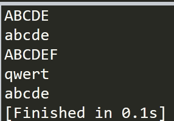
第二种：将字符串首部变更大小写title()与capitalize()
title()将给定的字符串中所有单词的首字母大写，其他全部小写
capitalize()将给定的字符串中首字母大写，其他小写
这两个函数主要用于文稿改写等方面
代码测试如下：
import string
s="abcde,qweRTY"
t="abcde qweRTY"
#以，隔开的单词
print(s.title())
print(s.capitalize())
#以空格隔开的单词
print(t.title())
print(t.capitalize())结果如下所示
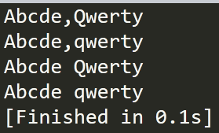
很明显 title函数结果为1，3行只有第一个单词中A，和第二个单词中的Q大写 其他全部小写
至于capitalize()对应的2，4行只有第一个字母会大写
第三种大小写反转swapcase()
swapcase()的功能便是将原字符串中的大写改为小写，小写再改为大写
我们以"qweASDrtZX"为例子
结果应该为：QWEasdRTzx
由于使用较少所以不予过多介绍
2.is判断函数
is判断函数为一种判断函数，根据规定字符串判断是否符合结果返回True或者False
主要判断如下：
isdecimal():判断给定字符串是否全为数字
isalpha():判断给定的字符串是否全为字母
isalnum()：判断给定的字符串是否只含有数字与字母
isupper():判断给定的字符串是否全为大写
islower():判断给定的字符串是否全为小写
istitle():判断给定的字符串是否符合title()
isspace():判断给定的字符串是否为空白符（空格、换行、制表符）
isprintable():判断给定的字符串是否为可打印字符（只有空格可以，换行、制表符都不可以）
isidentifier():判断给定的字符串是否符合命名规则（只能是字母或下划线开头、不能包含除数字、字母和下划线以外的任意字符。）
import string
# 1234 全是数字 为True
print("1234".isdecimal())
# asdf4 中4是数字不是字母 为False
print("asdf4".isdigit())
# qwe12@ 中@既不是数字 也不是字母为False
print("qwe12@".isalnum())
# asdf全是小写 为True
print("asdf".islower())
# ADS全是大写 为True
print("ADS".isupper())
# Wshd，qwe中 虽然W大写 但是第二个单词qwe中q小写 不符合title()所以为False
print("Wshd，qwe".istitle())
# \n为换行 是空白符 为True
print("\n".isspace())
# \t为制表符 不可打印 为False
print("\t".isprintable())
# qe123 符合命名规则 为True
print("qe125".isidentifier())
判断结果如下：
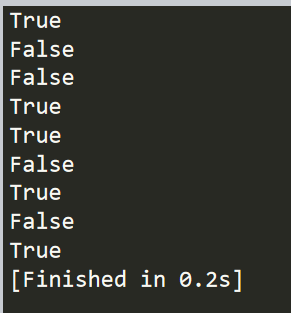
3.字符串填充
谈起来填充，相比大家都不会陌生。填充操作虽然有些少见，但有时候也能发挥极大作用。
填充操作是将限定长度的字符串，用给定的字符扩充至一定长度。所以最重要的有两个元素。
第一是扩充的长短，也就是width，当字符串比width小时才会扩充，当字符串大于长度时，自然是返回字符串 本身。
第二便是扩充的位置，分三类：源字符串居左，居右和居中。
居中为center(width),这时候原来的字符串将会在中间，扩充物出现在两边。
居左为ljust(width)，l为lef的缩写，源字符串在左边，填充物出现在字符串的右边。
居右为rjust(width), r为right的缩写，源字符串在右边，填充物出现在字符串的左边。
有一点需要注意的是，填充物fillchar是可选的，其默认为空格，可以更改为任意字符。
以字符串“qwer”居左填充为长度10的字符串，填充物为“+”为例，代码应该如下：
import string
print("qwer".ljust(10,"+"))
代码结果：
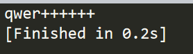
这里单独介绍函数zfill(width)，为何着重介绍zfill函数呢？
一方面 zfill(width)函数只需要传入参数width即可，填充物为“0”，采用居右填充的方式
另外一方面该函数会识别字符串的正负，若为“+”或者“-”则不变，越过继续填充
例子如下：
import string
# 不加"+""-"纯数字，用填充物"0"将字符串前填充满
print("12345".zfill(10))
# 加"-"纯数字，越过"-"用填充物"0"将字符串前填充满
print("-125".zfill(10))
# 加"+"数字字母组合，越过"+"用填充物"0"将字符串前填充满
print("+qwe125".zfill(10))
# 加其他符号，用填充物"0"将字符串前填充满
print("#qwe12".zfill(10))
结果如下所示：
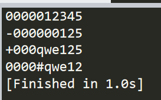
4.子字符串搜索
1.子字符串位置搜索count(sub[, start[, end]])
主要对指定字符串搜索是否具有给定的子字符串sub,若具有则返回出现次数。
strat与end代表搜索边界，若无写则代表全字符串搜索
以下为例子：
import string
# 全部字符串内 搜索qwe 出现的次数
print("qwertasdqwezxcqwe".count("qwe"))
# 由于字符串从0开始计数，1为字符串第二个，相当于从w开始
print("qwertasdqwezxcqwe".count("qwe",1))
# 从字符串第 2个开始到第15个截止，共出现qwe的次数
print("qwertasdqwezxcqwe".count("qwe",1,14))
运行结果统计如下：
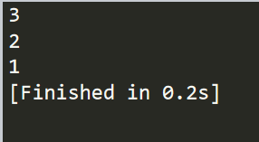
2.字符串开始与结尾判断
startswith(prefix[, start[, end]])
endswith(suffix[, start[, end]])
两个函数作用相同，判断函数的开始，或者末尾的字符串是否为指定字符串
与之前的搜索相同，可以给字符串加边界，若无则为全字符串搜索
两个函数都属于判断函数，返回结果为True与False
强调：这里的不仅可以输入子字符串，还可以输入元组，若为元组时候只要有一个成真即为True
以下面为例子：
import string
# 搜索开头位置为qwe 符合条件，为True
print("qwertasdqwezxcqwe".startswith("qwe"))
# 开头位置为字符串下标为1开始，也就是说开头为wer与qwe不同为False
print("qwertasdqwezxcqwe".startswith("qwe",1))
# 结尾位置为qwe符合条件 为True
print("qwertasdqwezxcqwe".endswith("qwe","asd"))
运行结果为下：
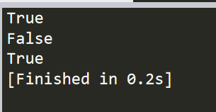
3.字符串位置锁定find与index函数
find(sub[, start[, end]]) 返回第一个子字符串的位置信息，若无则为-1
rfind(sub[, start[, end]])返回最右边的第一个子字符串的位置信息，若无则为-1
index(sub[, start[, end]]) 返回第一个子字符串的位置信息，若无则为报错
rindex(sub[, start[, end]])返回最右边的第一个子字符串的位置信息，若无则报错
从传参可以看出，查询位置函数也可以限定边界，使用方法同上函数
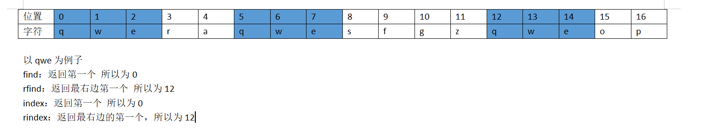
import string
s="qweraqwesfgzqweop"
print(s.find("qwe"))
print(s.rfind("qwe"))
print(s.index("qwe"))
print(s.rindex("qwe"))
结果如下：
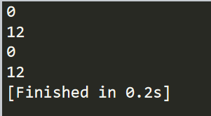
这里需要注意：
以上情况均为找到对应子字符串，若未找到
运行结果：find返回-1 index报错，情况如下
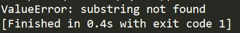
5.字符串替换
replace(old, new[, count])：将搜索到的字符串改为新字符串
作为替代函数，旧的字符串与新的字符串是必须输入的
count是可选择输入的参数，代表更改个数。
import string
s="qweraqwesfgzqweop"
# 将字符串全部的qwe 换为asd
print(s.replace("qwe","asd"))
# 将字符串前两个qwe 换为asd
print(s.replace("qwe","asd",2))
# 将字符串全部的qew 换为asd 没有则输出原字符串
print(s.replace("qew","asd"))
expandtabs(N)将\t 改为一定数量的空格
空格计算方式：N-（之前字符串长度）=空格数
若N-（之前字符串长度）=0 则空格数为N
若N-（之前字符串长度）<0 则空格数为1
import string
t="qwe\tqwer\tqasdsdf\tas"
print(t.expandtabs(4))
第一个\t ：设定长度为4，之前字符串qwe长度为3，4-3=1 替换1个空格
第二个\t ：设定长度为4，之前字符串qwer长度为4，4-4=0 替换4个空格
第三个\t ：设定长度为4，之前字符串qsdfsdf长度为7，4-7=-3<0 替换1个空格
所以结果如下所示：
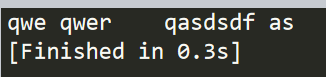
6.字符串分割
字符串分割常用函数为partition()和rpartition()
partition(sep)对给定字符串进行切割，切割成三部分
首先搜索到字符串sep，将sep之前的部分为一部分，sep本身作为一部分，剩下作为一部分
partition()与rpartition()之间十分相似，主要不同体现在当字符串中没有指定sep时
partition()分为三部分，字符串、空白、空白
rpartition()分为三部分，空白、空白、字符串
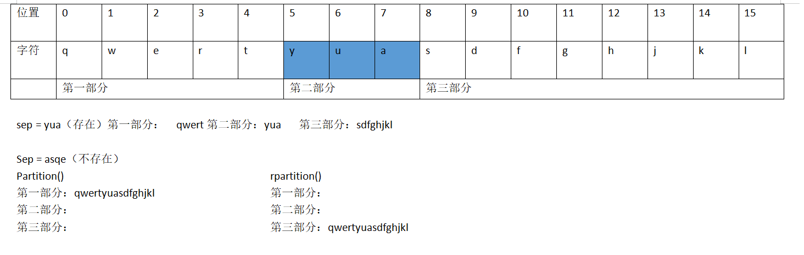
代码如下：
import string
t="qwertyuasdfghjkl"
print(t.partition("yua"))
print(t.partition("asqw"))
print(t.rpartition("asqw"))运行结果：
('qwert', 'yua', 'sdfghjkl')
('qwertyuasdfghjkl', '', '')
('', '', 'qwertyuasdfghjkl')
另一种常见的函数为split(sep=None, maxsplit=-1)和rsplit(sep=None, maxsplit=-1)
split()函数传参两种
sep为切割，默认为空格
maxsplit为切割次数，给值-1或者none，将会从左到右每一个sep切割一次
rsplit()相同，但是其遍历方式从右到左
最常见在输入与input连用，如下：
import string
t=input().split()
print(t)
7.字符串添加join()
将可迭代数据用字符串连接起来 ，首先理解什么是可迭代数据，简单理解就是字符串string、列表list、元组tuple、字典dict、集合set。
而且每个参与迭代的元素必须是字符串类型，不能包含数字或其他类型。
以下代码为例子：
import string
#字符串类型
a="qwer"
print("_".join(a))
#元组类型
b=("a","b","c","d")
print("=".join(b))
#集合类型
c={"qwe","asd","zxc"}
print(" ".join(c))
首先第一个例子为字符串类型，所以每一个字符之间都用之前的字符串来交叉
同理元组也是，元与元之间都要加入字符串“=”
集合也是这样，但是需要注意，集合的无需性，所以顺序可能颠倒
以上代码结果如下：
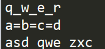
由于参与迭代的每个元素必须是字符串类型，不能包含数字或其他类型。
所以L1=(1,2,3)或者L2=('AB',{'a','cd'})是会报错的
8.字符串修剪
strip([chars]) lstrip([chars]) rstrip([chars])
strip()是为移除指定字符串char，如果没传入参数则为移除空格、制表符、换行符
lstrip()中 l为left缩写，函数表示从左到右遍历
rstrip()中 r为right缩写，函数表示从右边开始遍历
注意移除为到非char截止，举例子如下：
import string
a=" qweasdzxcrtqwe "
print(a.strip())
b="qweasdzxcrtqwe "
print(b.lstrip('q'))
c=" qweasdzxcrtqwe"
print(c.rstrip('qew'))
a为制表符加字符串，由于strip()未传入参数，所以删除空白
b使用lstrip()传入参数q，字符串从左开始第一个为q，是传入参数移除，第二个w不是传入参数，修剪停止，将剩下所有输出
c使用rstrip()传入参数qew，字符串从右开始，第一个为q在传入参数中，同理第二个、第三个也在，所以移除，第四为t不在传入参数中，将剩下所有输出
输出结果如下：
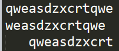
最后string的官方文档为官方文档
觉得不错的还望各位大佬点赞分享